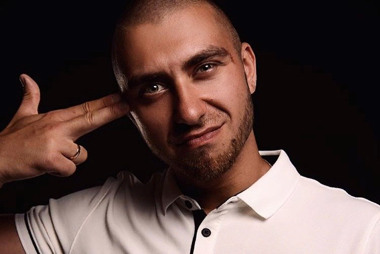
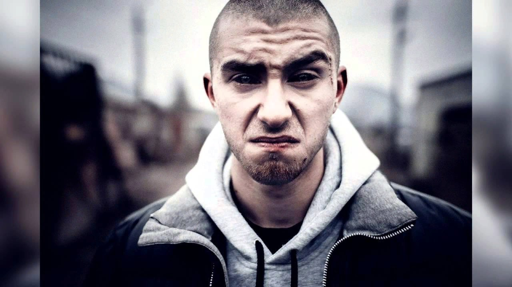

ТОНИ РАУТ
Сейчас трудно понять и принять агрессию в стиле. Ярким примером нестандартного исполнителя стал Тони Раут. Биография этого парня весьма оригинальна, хотя он мало распространяется о своём прошлом, предпочитая рассказывать о вымышленном герое, от лица которого пишет песни. Его любят, ему подражают, его уважают. Хотя прошло не так много времени с момента появления Тони на большой сцене. Его ценят за самобытность, агрессивный стиль и своё видение музыки. Творчество этого исполнителя не для массы обычных людей, поэтому чаще всего имя Тони Раута вызывает или недоумение, или скрытое отвращение. Сейчас Антон продолжает заниматься написанием текстов и музыки, но старается уделять время разросшейся армии фанатов, которые с удивлением отмечают, что в жизни Раут оказывается простым и приятным парнем, читающим серьёзные книги. Его команда - простые ребята с района, занимающиеся любимым делом в своё удовольствие, но не превращающие свою жизнь в хождение зомби с вечеринок на вечеринки. Он спортивный парень, любящий активное времяпрепровождение, хотя сам признаётся в интервью, что физическую форму набрал из-за бесконечных уличных драк. В его песнях - жизнь, улица и душевная боль. Однако в последних его треках начали появляться легкие нотки романтизма.
ГАРРИ ТОПОР

Гарри Топор начал свою музыкальную карьеру в конце «нулевых» и всего за несколько лет стал одним из самых популярных рэперов в Петербурге.Его треки отличаются необычной читкой, эмоциональностью и чёткой дикцией. Подача Топора необычна и своеобразна — от неё исходит невероятной силы агрессия и психическая энергия. Гарри Топор представляется нам человеком, не способным сдерживать эмоции в себе и выплескивающим их в своих треках. Сам он называет свой рэп злым. Будучи студентом, он начал записывать свои первые треки. Хотя звук был очень плохого качества, тем не менее, эти попытки сейчас можно назвать его первыми шагами в музыкальной карьере.
В 2010 году Гарри Топор представил свою новую работу «Эхо войны», благодаря которой Гарри стал знаменит.
В 2011 году альбом был переиздан и в нём появилось несколько новых песен.
В 2012 году вышел сингл «Вскрытие Покажет».
В 2013 году — альбом «Анатомический Театр», в записи которого участвовали рэперы Луперкаль и BLANK. «Анатомический театр» представляет собой «злой мрачный продукт с питерских окраин». Вторая работа — проект Mr. Makintosh «Guatemala Coffee Trip» — по словам автора, «некий артхаусный спектакль с копеечным бюджетом и пьяным сценаристом», более легкий для восприятия.
В 2014 году вышел совместный альбом Гарри Топора и Тони Раута – «Страна ос».
В 2015 году рэперы начали давать совместные концерты не только в Санкт-Петербурге, но и в других городах России.
В начале 2016 года Топор выпустил альбом «Лики Смерти», куда вошли 13 треков, один из которых – совместно с Нигативом из группы «Триада». За свою карьеру много сотрудничал с рэп-исполнителями из других стран, включая Бельгию, Германию и страны СНГ.
В июне 2016 года Гарри Топор попал на передачу «Вечерний Ургант».
У Гарри Топора за спиной – пять релизов и 5 баттлов (четыре победы — Obe 1 Kanobe, Billy Milligan, CZAR и Noize MC, одно поражение — ST)
